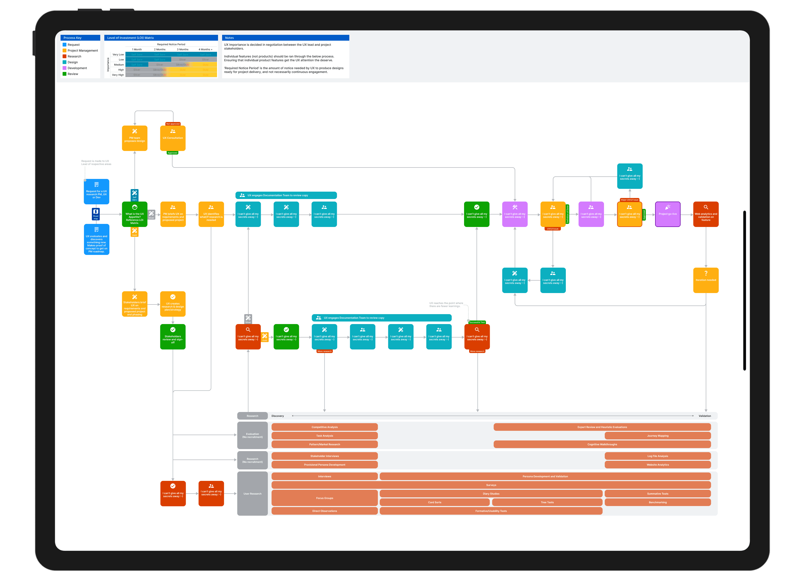

To ensure UX efforts drive the most value, I implemented a structured governance and strategy framework at Sophos. This approach hyper-focuses design resources on the initiatives that matter most, balancing investment with impact. At its core, this framework introduces a tiered investment model, allowing us to prioritize projects based on business goals, user needs, and available resources. By aligning UX engagement levels to project complexity and strategic importance, we maximize efficiency without compromising quality. This governance structure enables clear decision-making, improves cross-functional collaboration, and ensures that UX is embedded at the right level for every initiative. The result: a scalable, sustainable, and outcome-driven UX practice.
Without a clear governance model, UX resources were stretched across too many initiatives, resulting in inconsistent quality, misaligned priorities, and reactive rather than strategic design work.
Designers were involved in too many initiatives, reducing the depth of their contributions.
Some UX work had limited strategic value, while high-priority projects lacked sufficient investment.
Without a structured engagement model, some teams received full UX support while others had minimal or ad-hoc involvement.
Prioritisation of UX work was inconsistent, leading to delays and unclear expectations.
The foundation of the governance framework is a three-tier model that matches the level of UX engagement to the strategic importance and complexity of each initiative.
Strategic & Transformational
Full UX engagement from research to delivery. Close collaboration with stakeholders and iterative testing. Reserved for projects with significant customer or business impact.
Core Product Enhancements
Focused UX support with key touchpoints (e.g. heuristic reviews, design workshops). Strategic but lower-risk improvements to existing products.
Tactical & Low-Risk
UX guidance provided as needed (e.g. design system adherence, quick evaluations). Minimal hands-on design work, ensuring efficiency for smaller updates.
Led workshops and sessions to communicate the value of the tiered investment model. Collaborated with stakeholders to establish clear criteria for project prioritisation, ensuring alignment with business goals. Secured leadership buy-in by demonstrating how this approach would optimise UX resource allocation.
Introduced a structured project intake and assessment process to evaluate new UX requests and assign them to the appropriate tier. Defined governance checkpoints at the start of each project. Leveraged the Design System to enable self-service design for lower-tier work.
Established regular review sessions to evaluate ongoing UX priorities. Gathered stakeholder feedback loops from designers, PMs, and engineers. Tracked key metrics to validate the framework's success and made data-driven adjustments iteratively.
Built and introduced Gantt charts for tracking each designer's projects and commitments - improving workload distribution, enhancing project planning, and increasing transparency with stakeholders.
By prioritising UX engagement based on project complexity and strategic importance, the team dedicated more time to initiatives that delivered measurable improvements to user experience and business outcomes.
The clear governance model streamlined communication with product managers and engineers, ensuring UX was involved at the right stage. Stakeholders had a clear understanding of when and how to engage with UX.
Designers were no longer spread thin across low-impact projects. This led to reduced wasted effort, more consistent UX quality, and faster delivery of tactical improvements.
Regular governance reviews ensured UX engagement was continuously evaluated and adjusted. UX became a more strategic function within the organisation.